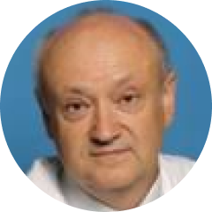
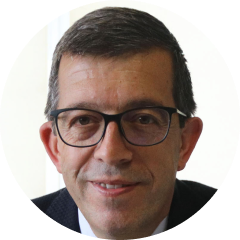

ERA-EDTA 2021年大会概要 2021年9月7日 19:00 CEST
2021年6月5日～8日に開催された第58回ERA-EDTAバーチャルコングレスから得られた貧血とCKDの洞察
はじめに
貧血は、慢性腎臓病（CKD）の合併症としてよく知られており、罹患率や死亡率の増加、QOLの低下と関連しています。貧血は、内因性エリスロポエチン（EPO）の減少、鉄欠乏、ヘプシジン濃度の上昇を伴う炎症など、いくつかの複雑なメカニズムによって引き起こされます。患者は多くの場合赤血球造血刺激因子(ESA)や経口または静脈内への鉄分の経口または静脈内補給の治療を受けが頻繁に行われますが、これらの治療では不十分な場合があります。新しい薬剤群である低酸素誘導因子プロリル水酸化酵素（HIF-PH）阻害剤は、内因性EPOの産生を増加させ、鉄の有用利用可能性を改善し、ヘプシジンレベルを低下させることを誘導することが示されています。
このライブウェビナーでは、4人の国際的な腎臓病学の専門家が、今年のERA-EDTA 2021大会の観点から、病態生理学や、現在および将来の治療法、患者管理のトレンド傾向、プラクティス診療上のギャップなど、CKD関連貧血の分野における重要な進展をレビューします。
Find out more学習目標
慢性腎臓病患者は、透析依存者、非透析依存者を問わず、しばしば貧血を呈します。臨床医家は、エビデンスに基づいた効果的な治療を行うために、この分野における最新の科学的・治療的発展を知っておく必要があります。その一方で、COVID-19のパンデミックをはじめとする様々な理由により、臨床医が学習イベントに参加できない場合があります。そこで、このライブウェビナーでは、CKD関連貧血患者のアウトカム予後を改善するために、最新の科学的知見および、診療ガイドライン、治療戦略などをまとめての概要を提供紹介することを目的としています。
目的
- CKD関連貧血の現在の治療法とアンメットニーズについて説明する。
- CKD患者の心血管リスクに対する貧血の影響を評価する。
- HIF-PH 阻害剤と標準治療との比較を中心に、さまざまな治療法を分析する。
- CKD関連貧血のに対する治療におけるHIF-PH阻害剤の役割を理解する。
- CKD関連貧血の治療に使用される様々な薬剤について、最も頻度の高い治療により発現した上の副有害事象作用を説明することができる。
- ERA-EDTA 2021 Virtual Congressで発表された速報内容を中心に、CKDの貧血治療に関する最新/重要な臨床試験を批判的に評価する。
講師教員陣:
-
Pablo Ureña Torres MD PhD
Clinique du Landy, Saint Ouen, and Necker-Enfants Malades Hospital、パリ, Pari、フランスs - France (議長)
- 
Evgeny Shutov MD
Botkin Clinical City Hospital & Russian Medical Academy of Continuous Professional Education、（ロシア、モスクワ
Francesco Locatelli MD FRCPB
Alessandro Manzoni Hospital、レッコ、イタリア, Lecco, Italy
- 
Mustafa Arıcı MD FERA
Hacettepe University Faculty of Medicine, Department of Nephrology、アンカラ、トルコ, Ankara - Turkey
財務情報
こ今回の独立した医学教育会議は、Astellasアステラス製薬から資金提供を受けています。Astellasアステラス製薬は、講演料および組織運営費を提供しています。
本教育プログラムは、ERA-EDTAおよび関連するコミュニケーション速報の著者からの支援を受けて、SEI Healthcare LLCが開発しました。SEI Healthcare LLCのメンバーからは、関連する個人的な利益相反の報告は一切ござい金銭関係の報告はありません。
講演者の情報開示
- Ureña Torres博士 - 情報開示確認中 TBC
- Shutov教授は Amgen社、Astellas社、Frenesius Kabi社から講演者として謝礼金を受け取っており、各社の諮問委員会でコンサルタント業務を提供し行っています。
- Locatelli教授は Amgen社、Astellas社、AstraZeneca社、Baxter社、FibroGen社、GSK社、Norgine社、Otsuka大塚製薬株式会社、Roche社、Vifor-Pharma社の諮問委員会でコンサルタント業務ティングを提供行っしています。また、Akebia、Amgen、Astellas、AstraZeneca、Bayer、B.Braun、Roche、Vifor-Pharmaからの使途非無制限の助成金を受けて開催された各種会議に参加し、スピーカー講演者としての謝礼金を受け取っています。
- Arıcı教授は Amgen、Astellas、AstraZeneca、Bayer、Baxter、Boehringer Ingelheim、Menarini、MSD、Novo Nordisk、Sandoz、Sanofiから講演者としての謝礼金を受け取っています。
生涯教育（CME）査読者レビュアー
August Felix, オーガスト・フェリックス（BSC MSC
SEI Healthcareヘルスケア、独立教育部門ディレクター
情報開示： August Felixにオーガスト・フェリックスは、関連する金銭的関係を開示していません利益相反はございません。
編集者
編集者
SEI Healthcare、サイエンティフィック・コンテンツ・マネージャー、SEIヘルスケア
情報開示： Rita Arestaには、関連する利益相反はござ金銭的関係を開示していません。